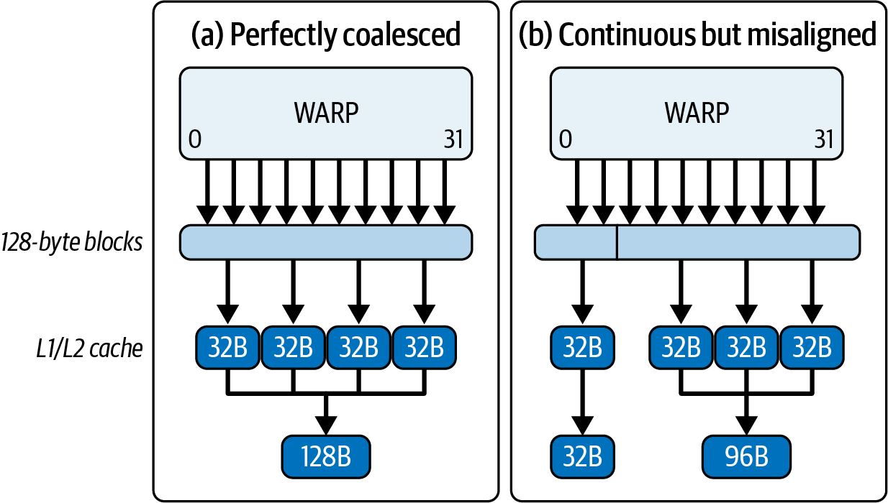
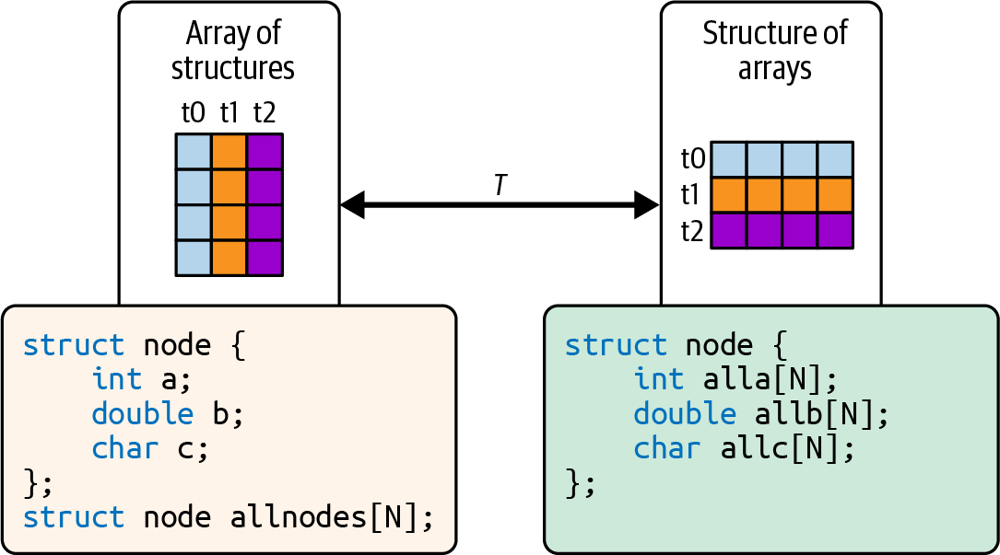
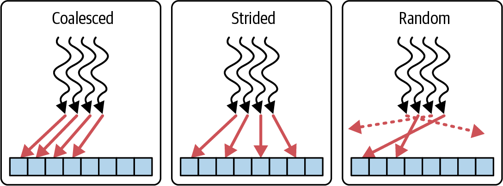
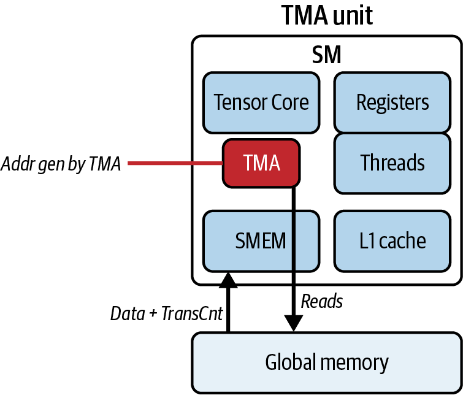

随着 AI 模型规模和复杂度增长，GPU memory system 往往成为理论计算能力与实际性能之间的瓶颈。正如第 6 章所述，现代 NVIDIA GPU 将大量面向吞吐优化的 core 与专用 Tensor Core 结合起来，并配有高带宽内存（HBM）、CPU-GPU 统一虚拟地址与一致性机制（具体能力随 Grace Blackwell Superchip 等平台而异）、片上 shared memory、cache，以及 Tensor Memory Accelerator（TMA）等专用数据搬运引擎。
本章将介绍多种 CUDA C++ 与 PyTorch 优化技术，包括合理组织和对齐数据以提高访存效率、消除重复加载，以及利用硬件能力让数据传输与计算重叠。
通过矩阵乘法、tensor operation 等优化前后的具体示例，你将看到 memory access pattern、tiling strategy 和异步数据传输方面的改动如何减少浪费的带宽并提高有效算术强度。它们可能改变 kernel 的主要瓶颈，但是否从 memory-bound 转为 compute-bound 仍需结合目标硬件和实测 Roofline 判断。
学完本章后，你将能够编写更有效利用 GPU memory hierarchy 与硬件数据传输引擎的 CUDA kernel。
代码的 memory access pattern会显著影响性能。当 warp 中各 thread 访问相邻地址时，硬件通常能用最少的 memory transaction 覆盖所请求的数据。若地址分散或跨越额外边界，则会访问更多 32-byte sector，取回较多未使用字节并浪费带宽。现代 NVIDIA GPU 的 L2 cache line 与 sector 组织具有架构细节；进行 coalescing 分析时，应关注指令所请求的有效字节、实际访问的 sector 数及 cache 命中层级，而不能把所有访问简单等同为单个 128-byte transaction。
部分 Blackwell GPU 的单 GPU HBM3e 标称带宽可达约 8 TB/s；若把双 GPU 模块两侧的带宽相加，聚合值可写为约 16 TB/s，但这不是任一单 kernel 可访问的统一共享带宽。非合并访问会增加实际传输字节数，使有效带宽显著低于物理带宽上限。
在非合并情形中，warp 内各 thread 从分散地址加载数据，因而触及许多 sector。即使地址连续，若整个 warp 的访问范围没有按 sector 边界良好覆盖，也可能比理想情形多访问 sector；具体数量取决于每 thread 访问宽度、首地址偏移和 cache 层级。
以 32 个 thread 各读取一个 4-byte 值为例，连续且 128-byte 对齐的 128-byte 范围恰好覆盖 4 个 32-byte sector。若首地址只偏移 4 字节，这一连续范围通常会覆盖 5 个 sector，而不是原文所暗示的必然产生两个完整 128-byte 传输；更大的偏移或不同访问宽度会产生不同结果。判断浪费应比较 requested bytes 与实际 sector bytes。
在合并情形中，thread 访问相邻地址，硬件可用较少的 sector request 覆盖这些加载。图 7-1对比了合并与非合并 memory access。

在 kernel 代码中，这类问题通常表现为跨步（strided）或不规则索引，使 thread 触及不同 sector 乃至不同 cache line。此时一个 warp 的 global-memory instruction 需要访问更多 sector，而不是用最少数量覆盖连续有效数据。
在 Nsight Compute 中，Memory Workload Analysis 可显示 requested/actual throughput、sector 数和每 request 的 sector 数等指标；具体名称随版本变化。对每个 thread 加载 4-byte 的满 warp 指令，理想连续访问常对应 4 个 32-byte sector，但其他向量宽度、active mask 或 replay 情形不能套用固定阈值。低 load efficiency 或相对于 requested bytes 过多的 sector 表明存在带宽浪费；DRAM 吞吐低于峰值本身并不能证明 warp 正在等待 memory，也可能是 cache hit、低并行度、指令依赖或其他瓶颈。
若分析确认 kernel 因非合并访问而浪费带宽，可以重新组织数据，使 warp 的 32 个 thread 尽量访问连续元素。例如，以 input[idx] 访问数组，其中 idx = blockIdx.x * blockDim.x + threadIdx.x；也可以在按字段处理数据时，将 array of structures（AoS）改为 structure of arrays（SoA），使 thread i 访问字段数组中的元素 i。图 7-2展示两种布局：AoS 中相邻 thread 读取同一字段时可能形成跨步访问，而 SoA 可让 thread i 对应连续字段数组中的元素 i。AoS 并非天然低效；若 thread 读取整个紧凑结构，或结构宽度与访问模式合适，它也可能合并良好。

完成布局调整后，硬件通常能以更少的 sector request 完成 warp 的 global-memory load，从而提高返回数据中的有效字节比例。是否改善以及幅度多大，仍应通过 Nsight Compute 指标和 kernel 时间验证。
下面通过优化前后的示例，说明如何把跨步 global-memory access 改为连续访问。性能增益取决于目标 GPU、cache 行为和测量方法。
优化前示例（C++）：非合并的跨步访问。在这个示例中，每个 thread 以 stride 2 从输入数组复制元素，形成连续 thread 之间相隔 8 字节的访问。它是跨步访问，但不是通常所说的“地址未对齐”：
#include<cuda_runtime.h>#include<iostream>__global__voiduncoalescedCopy(constfloat*__restrict__in,float*__restrict__out,intN,intstride){// n = 1048576, stride = 2intidx=blockIdx.x*blockDim.x+threadIdx.x;if(idx<N){// Loads from in[] with a stride, causing// multiple memory segments to be fetchedout[idx]=in[idx*stride];}}intmain(){constintN=1<<20;constintstride=2;float*h_in=nullptr;float*h_out=nullptr;cudaMallocHost(&h_in,N*stride*sizeof(float));cudaMallocHost(&h_out,N*sizeof(float));for(inti=0;i<N*stride;++i){h_in[i]=static_cast<float>(i);}float*d_in,*d_out;cudaMalloc(&d_in,N*stride*sizeof(float));cudaMalloc(&d_out,N*sizeof(float));cudaMemcpy(d_in,h_in,N*stride*sizeof(float),cudaMemcpyHostToDevice);// Number of threads per block (multiple of 32)constintthreadsPerBlock=256;// Number of blocks per gridconstintblocksPerGrid=(N+threadsPerBlock-1)/threadsPerBlock;uncoalescedCopy<<<blocksPerGrid,threadsPerBlock>>>(d_in,d_out,N,stride);cudaDeviceSynchronize();cudaFree(d_in);cudaFree(d_out);cudaFreeHost(h_in);cudaFreeHost(h_out);return0;}
该 CUDA C++ kernel 的相邻 thread 从间隔大于 1 个元素的地址执行 global-memory load，因此一个 warp 触及的 sector 多于连续访问。与此同时，输出侧的 out[idx] 写入仍是连续且可合并的；分析时应将读写两条路径分开。
优化前示例（PyTorch）。在 PyTorch 中，可以用跨步 index 的 gather 构造类似情形：
importtorchdefuncoalesced_copy(input_tensor,stride):# Flatten to 1D so we know exactly# which dimension we're indexingflat_tensor=input_tensor.contiguous().view(-1)# Generate indices with a fixed stride to gatherassertflat_tensor.numel()%stride==0,"stride must divide tensor length"idx=torch.arange(0,flat_tensor.numel(),stride,device=flat_tensor.device,dtype=torch.long)# index_select uses a gather kernel that issues uncoalesced loadsreturntorch.index_select(flat_tensor,0,idx)# Usagen,stride=1<<20,2inp=torch.arange(n*stride,device='cuda',dtype=torch.float32)out=uncoalesced_copy(inp,stride)
这段 PyTorch 代码使用带跨步 index pattern 的 torch.index_select，底层 gather kernel 会按 index 加载数据。对于 FP32 输入，相邻索引对应的地址间隔是 stride * 4 bytes；stride 为 2 时，一个满 warp 的请求覆盖约 252 字节范围并触及约 8 个 32-byte sector。
这里仍是一条 warp memory instruction 中的 32 个 lane request，不应描述成必然生成“32 个独立 memory transaction”。每个 thread 从 inp 加载一个值，硬件会按所触及的 sector 合并请求；stride 2 通常约为 8 个 sector，而更大 stride 或随机访问才可能逐渐接近每个 lane 一个 sector。图 7-3展示合并、跨步与随机访问模式。

原书给出的示意测量中，非合并版本的每个 warp request 平均触及 8 个 32-byte sector。对于 stride 2 的 FP32 满 warp load，这与其覆盖约 256 字节的范围相符；但实际 sector 数还受首地址对齐、active lane、cache 和生成指令影响，不能由“跨两条 128-byte cache line”这一说法单独推导。
相对于连续 FP32 满 warp load 通常触及的 4 个 sector，8 个 sector 意味着约一半加载字节未被该指令使用。表中的 Nsight Compute DRAM throughput 约为 sustained peak 的 25%，只是概念示意；低吞吐并不能单独证明 memory pipeline “饥饿”，需要结合 kernel duration、requested throughput 和 stall 指标解释。
现在把 thread 改为读取连续元素，使每个 warp 用更少的 sector 覆盖相同数量的有效数据。
优化后示例（C++）：合并访问。移除 stride（或设为 1）后，每个 thread 复制一个相邻元素，硬件可将 warp request 合并到最少的 32-byte sector：
#include<cuda_runtime.h>#include<iostream>__global__voidcoalescedCopy(constfloat*__restrict__in,float*__restrict__out,intn){intidx=blockIdx.x*blockDim.x+threadIdx.x;if(idx<n){// Contiguous load// Threads copy neighboring elementsout[idx]=in[idx];}}intmain(){constintn=1<<20;constsize_tbytes=n*sizeof(float);// 1) Allocate pinned host memoryfloat*h_in=nullptr,*h_out=nullptr;cudaMallocHost(&h_in,bytes);// page-locked host alloccudaMallocHost(&h_out,bytes);// 2) Initialize inputfor(inti=0;i<n;++i){h_in[i]=static_cast<float>(i);}// 3) Allocate device memoryfloat*d_in=nullptr,*d_out=nullptr;cudaMalloc(&d_in,bytes);cudaMalloc(&d_out,bytes);// 4) Copy to devicecudaMemcpy(d_in,h_in,bytes,cudaMemcpyHostToDevice);// 5) Launch kerneldim3block(256);dim3grid((n+block.x-1)/block.x);coalescedCopy<<<grid,block>>>(d_in,d_out,n);cudaDeviceSynchronize();// 6) Copy back to hostcudaMemcpy(h_out,d_out,bytes,cudaMemcpyDeviceToHost);// 7) Clean upcudaFree(d_in);cudaFree(d_out);cudaFreeHost(h_in);cudaFreeHost(h_out);return0;}
这里省略合并访问的 PyTorch 实现。对于 contiguous tensor，可写成 out = inp.clone() 来获得内容相同的新 tensor。其底层 copy kernel 通常会选择适合输入布局、dtype 与对齐条件的实现，但不能把所有版本和形状下的 clone() 都等同于固定的 vectorized memory copy。
还可以使用采用默认 TorchInductor backend 的 torch.compile，在语义允许时消除冗余 copy 或融合相邻 operation。是否保留、消除或融合 clone() 取决于 aliasing、mutation、graph capture 和编译器版本，不能仅因它是 device-to-device copy 就断定其行为。对稳定 shape，可测试 autotuning（如 mode="max-autotune"），但它会增加编译成本，也不保证所有算子采用特定的合并或向量化 schedule。第 13 和第 14 章将深入介绍 PyTorch compiler。
采用连续访问后，warp 内各 thread 访问相邻地址。对于 32 个 active thread 各读取一个 FP32 值的特定示例，128-byte 对齐范围通常覆盖 4 个 32-byte sector；跨 sector 边界时可能多一个 sector。表 7-1给出原书用于说明优化方向的一组示意指标。
| 指标 | 优化前（非合并） | 优化后（合并） |
|---|---|---|
| DRAM throughput（峰值百分比） | 25% | 90% (3.6×) |
| 全局内存加载效率 | 23% | 99% |
| 每个 request 的平均 sector 数 | 8.0 | 4.0（最优） |
| SM 活跃百分比 | 62% | 99% |
| Kernel 执行时间（ms） | 4.8 ms | 1.3 ms (3.7×) |
注意：所有指标表中的数值都只是用于解释概念的示意值，并非由本页代码可复现地推导出的通用 benchmark 结果。不同 GPU architecture 上的实际结果请参阅该 GitHub repository并核对相应硬件、软件版本与测量方法。
在这组示意数据中，调整 data layout 并合并 global-memory access 后，DRAM throughput 从峰值的 25% 上升到 90%，约为原来的 3.6 倍；kernel 执行时间从 4.8 ms 降至 1.3 ms，约改善 3.7 倍。这些数值只说明可能的趋势，不能作为该代码在任意 Blackwell GPU 上的预期结果。
示意的 Global Memory Load Efficiency 从 23% 上升到 99%，表示实际传输字节中更大比例是所请求的数据；同时 Average Sectors per Request 降至约 4.0。
只有在本例的访问宽度和 active mask 下，接近 4.0 才对应满 warp 各加载一个 FP32 值的理想连续访问：32 个 4-byte 值共 128 字节，覆盖 4 个 32-byte sector。对 FP64、vector load、部分 warp 或其他指令，理想 sector/request 值会不同。
对于满 warp 的 scalar load，极端分散访问可能接近 32 个 sector，因为每个 active lane 都可能落在不同的 32-byte sector。不能一概认为“高于 4.0 就是错误”，而应先根据每 lane 字节数和 active lane 数计算理想值，再比较 requested bytes 与 sector bytes。
本例约 4.0 sector/request，与连续 FP32 满 warp load 的理想覆盖一致。示意表中 SM Active 从 62% 升至 99%，但 SM Active 只表示至少有一个 warp active 的周期比例或相应版本定义，并不直接等同于计算单元利用率；应结合 duration 与其他 throughput/stall 指标判断。
总之，让相邻 thread 访问相邻地址，可以减少完成同一有效 load 所需的 sector 数，提高 Global Memory Load Efficiency。它可能改善 kernel 时间和 SM 活跃度，但结果取决于 cache、occupancy、指令组合及其他瓶颈。
至此可以看到，coalescing 优化的是一个 warp memory instruction 中 lane address 到 memory sector 的映射。32 个 thread 各自请求一个 4-byte 值，并不意味着硬件先执行 32 个独立 DRAM read 再把它们“拼接”为 128-byte transaction；coalescer 会依据地址直接生成所需 sector request。
下一节将讨论 vectorized memory access：让每个 thread 用一条更宽的 load/store instruction 获取对齐数据，例如 16-byte 的 float4。向量化主要减少动态指令数和地址计算开销；一个 warp 搬运的数据量也随每 thread 宽度增加，因此不能把它描述为把同样的数据从“32 个 transaction”固定变成“四个 128-byte transaction”。下面将介绍如何使用 CUDA 内置 vector type，并分析其对齐与边界条件。
Memory coalescing 是 NVIDIA GPU 在运行时根据 lane address 完成的硬件行为；vectorized memory access 则是在编译时让一条 load/store instruction 为每个 thread 显式搬运多个连续元素，例如使用 float4 搬运 16 字节。它主要减少完成同等数据搬运所需的动态指令数和地址计算，不存在需要额外消除的“拼接开销”。
高效的 global-memory access要求 warp 的 lane address 尽量覆盖连续、对齐的 sector。32 个 thread 各读取一个 4-byte float 时，coalescer 会直接生成覆盖这 128 字节所需的 sector request，并非先发出 32 个独立 DRAM request 再拼成一条 cache line。
在理想合并情形下，一个 warp 读取 32 个 4-byte word，并且访问范围按 128 字节对齐时，恰好覆盖 4 个 32-byte sector。Nsight Compute 的 sector 与 requested/actual byte 指标可揭示额外流量；对本访问宽度而言，未对齐、跨步或分散访问可能使 sector/request 高于 4.0，并降低 Global Memory Load Efficiency。其他 per-thread 宽度对应不同的理想 sector 数。
若 kernel 对同一连续数组逐元素执行多条 scalar load/store，可尝试让每个 thread 处理一个更宽且自然对齐的 vector。CUDA 内置 float4 将 4 个 4-byte float 组成一个大小与对齐要求均为 16 字节的类型。下面给出简化示意：
// Example of a custom float4 for illustration purposes.// Note: it's recommended to use the built-in CUDA float4 type.// Note: if N is not divisible by 4, handle the last N % 4 elements// (e.g., a short scalar cleanup) or assert divisibility in host code. The// input and output pointers must be 16-byte aligned for float4 loads/stores.structmy_float4{floatx;// 4 bytesfloaty;// 4 bytesfloatz;// 4 bytesfloatw;// 4 bytes};
当 warp 的 32 个 thread 各执行一次 float4 load 时，共请求 32 × 16 = 512 字节。若 lane address 连续且整体对齐，该范围覆盖 16 个 32-byte sector，也可按 4 个连续的 128-byte 范围理解。这里应报告每条 warp instruction 约 16 sector，而不是沿用 scalar FP32 示例的 4 sector/request；“每个 128-byte 范围含 4 个 sector”与 profiler 的“每条 request 含多少 sector”不是同一个分母。
若原代码每个 thread 用 4 条 scalar instruction 搬运 4 个相邻 float，改用一次 float4 load 可把这部分 load instruction 数降至四分之一。Coalescing efficiency 仍由所有 lane 的地址决定；向量化本身不会把理想 sector/request 固定为 4.0。
PyTorch compiler 等高层 GPU compiler在能够证明 alignment、contiguity、边界与 aliasing 条件时，可能生成 vectorized memory operation。与 vector width 匹配的 per-thread tile 有助于编译器选择这种 schedule，但实际代码生成必须检查 IR/PTX/SASS 或 profiler，不能假定 framework 一定减少 memory transaction。
如果原访问既未合并又能通过重新分组而改善，vectorization 与 layout 调整可能同时提高 load efficiency；但对本来已经连续合并的 scalar copy，向量化通常不会把 sector efficiency 从低值自动提升到接近 100%。更宽的 warp request 会访问相应更多的 sector。
Vectorized load 可减少每字节对应的 memory instruction 数，并可能提高有效带宽。指针必须满足所用 vector type/instruction 的 alignment 要求。CUDA Programming Guide 说明 runtime/driver allocation（如 cudaMalloc）返回的基址至少按 256 字节对齐，但切片偏移和自定义 allocator 仍可能破坏后续地址的对齐。
该基址足以满足 allocation 起点处 16-byte 或 32-byte 的对齐，但加上 element offset 后，只有字节偏移是 vector alignment 的整数倍时仍保持对齐。下面的 cast 只是向 compiler 表达预期类型，并不会在运行时修复或验证指针：
autoptr4=reinterpret_cast<constfloat4*>(ptr);
cast 前应确认指针值按 16 字节（4 个 float）对齐。虽然 cudaMalloc() 返回至少 256-byte aligned 的基址，但若 element offset 不是 4 个 float 的倍数，地址便不再满足 float4 alignment。尾部不足一个 vector 的元素还需要单独处理；否则示例中的 N/4 thread 会漏掉余数。
若 base address 与每 thread stride 都按 32 字节对齐，每个 thread 每轮读取 32 字节，则满 warp 共请求 1,024 字节，对应 32 个 32-byte sector，也可分为 8 个连续的 128-byte 范围。源码最终编译为两条 16-byte instruction 还是一条 32-byte instruction，取决于目标 compute capability、PTX/SASS instruction、数据类型和 compiler 证明；不能只由“Blackwell”这一名称保证。正确对齐可避免单个 lane vector 跨越额外边界。
截至原书写作时，CUDA的传统内置 vector type 中没有由 8 个 float32 组成的通用 `float8`。原文件名 <vector_types.h> 中还混入了零宽字符，译文已清除。可以定义含 8 个 float 的 struct，并以两个 float4 load 显式搬运；也可用 alignas(32) 表达 32-byte type alignment。`alignas` 只约束合法对象地址，是否生成单条 32-byte global load 必须查看目标 Blackwell 的实际 SASS，不能由 cast 或 alignment 单独保证。Hopper 与 Blackwell上的代码生成也会随 Toolkit 与编译选项变化。
每 thread 读取 32 字节（8 个 float × 4 byte）时，满 warp 搬运 1,024 字节，即 32 个 sector 或 8 个 128-byte 范围。每 thread 读取 16 字节（一个 float4）时，满 warp 搬运 512 字节，即 16 个 sector 或 4 个 128-byte 范围。base pointer 与 per-thread stride 的自然对齐有助于避免 split sector。若确实使用要求 32-byte alignment 的 256-bit type/instruction，就必须满足该对齐；但“对齐”是正确且高效代码的必要条件之一，不等于必然达到 peak throughput。
下面用一个简单 vector copy kernel 对比 scalar 与 vectorized memory access。需要注意，两版代码都采用连续索引，因此 scalar 版已经具备良好的 coalescing。
优化前示例（C++）：scalar copy。每个 thread 复制一个 float：
#include<cuda_runtime.h>__global__voidcopyScalar(constfloat*__restrict__in,float*__restrict__out,intN){intidx=blockIdx.x*blockDim.x+threadIdx.x;if(idx<N){// Scalar load: 4-byte copy per threadout[idx]=in[idx];}}intmain(){constintN=1<<20;float*h_in=nullptr;float*h_out=nullptr;cudaMallocHost(&h_in,N*sizeof(float));cudaMallocHost(&h_out,N*sizeof(float));for(inti=0;i<N;++i)h_in[i]=float(i);float*d_in,*d_out;cudaMalloc(&d_in,N*sizeof(float));cudaMalloc(&d_out,N*sizeof(float));cudaMemcpy(d_in,h_in,N*sizeof(float),cudaMemcpyHostToDevice);dim3block(256),grid((N+255)/256);copyScalar<<<grid,block>>>(d_in,d_out,N);cudaDeviceSynchronize();cudaFree(d_in);cudaFree(d_out);cudaFreeHost(h_in);cudaFreeHost(h_out);return0;}
优化前示例（PyTorch）。为了说明逐元素操作，可以用 Python loop 编写 scalar copy；但这主要测到大量 Python dispatch 和小 kernel launch 开销，不能作为 CUDA scalar memory instruction 的公平基准：
importtorchdefcopy_scalar(inp:torch.Tensor)->torch.Tensor:out=torch.empty_like(inp)flat_in=inp.view(-1)flat_out=out.view(-1)foriinrange(flat_in.numel()):# Each iteration issues a 4-byte load on the GPU# This is extremely slow. DO NOT DO THIS!# Use vectorized operations to avoid Python loops# on GPU tensors as shown in optimized versionflat_out[i]=flat_in[i]returnout# UsageN=1<<20inp=torch.arange(N,device='cuda',dtype=torch.float32)out=copy_scalar(inp)
对于连续、对齐的 4-byte scalar load，满 warp 的一条 instruction 请求 128 字节并覆盖 4 个 sector；轻微错位通常会多触及一个 sector。使用 float4 后，每条 warp instruction 搬运的数据增至 512 字节并覆盖 16 个 sector，但每个 thread 可用一条 vector instruction 代替 4 条 scalar instruction 来完成相同的总元素数。下面改用 vector load。
优化后示例（C++）：vectorized copy。每个 thread 复制一个 float4（16 字节）：
#include<cuda_runtime.h>// 16-byte (128-bit) vector copy: one float4 per threadstatic_assert(alignof(float4)==16,"float4 alignment must be 16 bytes");__global__voidcopyVector16B(constfloat4*__restrict__in,float4*__restrict__out,intN4)// number of float4 elements{intidx=blockIdx.x*blockDim.x+threadIdx.x;if(idx<N4){// Per-thread 16B load+store.// On sm_90, NVCC emits ld.global.v4.f32 / st.global.v4.f32.// for 16-byte vector loads and stores// On sm_90 (Hopper) (Blackwell), NVCC emits// ld.global.v8.f32 and st.global.v8.f32 for 32-byte aligned dataout[idx]=in[idx];}}intmain(){constintN=1<<20;// total number of floatsconstintN4=N/4;// total number of float4s (16B chunks)float4*d_in=nullptr,*d_out=nullptr;cudaMalloc(&d_in,N4*sizeof(float4));// >=256B alignedcudaMalloc(&d_out,N4*sizeof(float4));dim3block(256);dim3grid((N4+block.x-1)/block.x);copyVector16B<<<grid,block>>>(d_in,d_out,N4);cudaDeviceSynchronize();cudaFree(d_in);cudaFree(d_out);return0;}
这里使用 <cuda_runtime.h> 中的 CUDA 内置 float4 type，并启动 N/4 个 thread，使每个 thread 复制一个 float4（16 字节），即 4 个 float；满 warp 共处理 128 个 float，覆盖 16 个 sector。cudaMalloc 返回至少 256-byte aligned 的基址，满足 float4 要求；但 N 必须能被 4 整除或另行处理 tail，指针偏移也必须保持对齐。misaligned reinterpret cast 会产生未定义或不受支持的访问，而不仅仅是“失去 vectorization”。下面的代码尝试展示 32-byte aggregate 路径，但是否生成单条 Blackwell 32-byte instruction 仍需检查编译结果：
// --- Blackwell-only variant: 32-byte per-thread vector copy// (PTX: ld.global.v8.f32)// Requires 32B alignment.#include<cuda_runtime.h>// Proof of 32-byte alignmentstatic_assert(alignof(float8)==32,"float8 alignment must be 32 bytes");structalignas(32)float8{floatv[8];};__global__voidcopyVector32B(constfloat8*__restrict__in,float8*__restrict__out,intN8){intidx=blockIdx.x*blockDim.x+threadIdx.x;if(idx<N8){// Per-thread 32B load+store// NVCC emits ld.global.v8.f32/st.global.v8.f32 on sm_100out[idx]=in[idx];}}intmain(){constintN=1<<20;constintN8=N/8;float8*d_in,*d_out;// cudaMalloc returns pointers aligned to ≥256 bytes// This will allow the compiler to emit// optimized ld.global.v8.f32 and st.global.v8.f32 instructionscudaMalloc(&d_in,N8*sizeof(float8));cudaMalloc(&d_out,N8*sizeof(float8));dim3block(256),grid((N8+block.x-1)/block.x);copyVector32B<<<grid,block>>>(d_in,d_out,N8);cudaDeviceSynchronize();cudaFree(d_in);cudaFree(d_out);return0;}
优化后示例（PyTorch）。可以用 tensor view 与 clone 表达按 4 个元素分组后的连续 copy：
importtorchdefcopy_vectorized(inp:torch.Tensor)->torch.Tensor:# Reshape into groups of 4 floats for bulk copyvec=inp.view(-1,4)# clone() on a contiguous CUDA tensor performs a device-to-device copy# using optimized runtime paths such as cudaMemcpyAsync().out_vec=vec.clone()returnout_vec.view(-1)# UsageN=1<<20inp=torch.arange(N,device='cuda',dtype=torch.float32)out=copy_vectorized(inp)
对 reshaped tensor 调用 clone() 会执行连续 copy，而前面的 Python loop 会启动大量逐元素 operation。`view(-1, 4)` 本身只是改变 shape metadata，不会要求 PyTorch copy kernel 按 float4 发射，也不会改变底层 contiguous storage；是否向量化由实现和编译结果决定。因此该 PyTorch 对照主要体现批量 operation 与 Python loop 的差异，不能用于量化 CUDA scalar 与 vector instruction 的收益。表 7-2保留原书示意数据，但不应视为这些代码的可复现结果。
原文将 Blackwell/CUDA 13 概括为把每 thread vector load/store 从 Hopper 的 16 字节翻倍到 32 字节。更准确地说，特定目标架构、类型和指令路径可能支持 32-byte operation，但源码是否生成单条相应 SASS instruction 取决于 compiler 能否证明 alignment 与其他合法性条件；否则可能拆成较窄 instruction。指令数增加可能带来开销，但在 memory-bandwidth-bound copy 中未必按比例降低性能。
使用正确对齐的 float4 vector load 时，每个 thread 每条 instruction 搬运 16 字节。它可能减少 instruction overhead，但原 scalar C++ kernel 已是连续合并访问，因此不能据此断言 memory bandwidth utilization 必然出现表 7-2所示幅度的改善。
| 指标 | 优化前（scalar） | 优化后（vectorized） |
|---|---|---|
| 全局内存加载效率 | 28% | 97% |
| 每个 request 的平均 sector 数 | 31.8 | 4.0 |
| DRAM throughput（峰值百分比） | 25% | 90% (3.6×) |
| Kernel 执行时间 | 4.2 ms | 1.2 ms（改善 3.5 倍） |
按原书表中数值，Global Memory Load Efficiency 从 28% 升至 97%，DRAM throughput 从峰值的 25% 升至 90%，kernel runtime 约改善 3.5 倍。然而，所列 scalar C++ kernel 对连续数组执行合并 copy，正常不应产生 31.8 sector/request 或仅 28% load efficiency；因此这些指标不能“证实”该 scalar/vector code 对照，可能来自不同访问模式或仅为教学构造。
表中 runtime 从 4.2 ms 降至 1.2 ms，同样缺少 GPU 型号、clock、warmup、iteration、计时范围与编译产物，无法复现。Global Memory Load Efficiency 的含义是 requested bytes 相对于实际传输 bytes 的效率，不应表述为“几乎每个 128-byte transaction 都被使用”。
表中的 average sectors/request 从 31.8 降至 4.0 也与本例的 request 宽度不相容：满 warp 的 float4 instruction 请求 512 字节，理想情况下覆盖 16 个 sector，而非 4 个。若 metric 按不同 instruction 或不同分组统计，必须给出准确 metric 名称与 source counter 后才能比较。
在合法且对齐的场景中，以一条 vector load 替代 4 条 scalar load 可以减少 instruction 数；若 scalar 访问原本分散，配套的 layout 改动还可提高 sector efficiency。但对已经合并的 copy，load efficiency 通常不会仅因向量化从 28% 跳到 97%，实际收益应以同等数据量、同一 kernel 语义和同一测量方法验证。
Vectorization 主要减少 instruction count；coalescing 与 alignment 主要减少完成给定 requested bytes 所需的额外 sector。两类效果应分别测量。
下面对比上一节的 coalesced global-memory access 与本节的 vectorized memory access。Coalescing 关注 warp 内各 lane 的地址能否由尽量少的 sector 覆盖；vectorization 关注每个 thread 能否用较少的宽 instruction 搬运多个相邻元素。表 7-3概括两者差异。
| 方面 | Coalesced warp load（thread 间） | Vectorization（thread 内） |
|---|---|---|
| 粒度 | thread ↔ 连续 memory address | 每个 thread ↔ vector load |
| 典型方法 | 连续索引（stride = 1） | 使用 float4、显式要求 32-byte alignment 的自定义 struct，或目标 toolchain 支持的 32-byte-aligned vector type |
| 每 warp 数据覆盖 | 32 thread × 4 byte → 128 byte；对齐时覆盖 4 个 32-byte sector | 32 thread × 16 byte → 512 byte；对齐时覆盖 16 个 32-byte sector，即 4 个连续 128-byte 范围 |
| Instruction count 变化 | 只调整 lane address 时，load instruction 数通常不变 | 同等 per-thread 数据量下，以 1 条 vector load 替代 4 条 scalar load |
| 收益 | 减少分散或浪费的 sector | 减少 instruction 与地址计算；不一定减少同等数据量的 sector |
结合这两种策略，可以让 warp 访问连续 sector，同时让每个 thread 用合适的宽 instruction 搬运多个元素。这有机会减少 sector waste 与 instruction overhead，但能否接近 memory bandwidth peak 还取决于 occupancy、并发 request 数、cache、ECC、clock 和 kernel 其他工作。
原文称 Blackwell 与 CUDA 13 之前每 thread global-memory vector load 一律限于 16 字节，并称两者新增通用 32-byte load/store instruction 与 type。实际可用宽度需按 compute capability、PTX ISA、SASS 与 CUDA header 中的具体 type 核对；CUDA Toolkit 版本本身不能让旧架构获得新硬件指令。
若目标架构与 toolchain 确实提供可用的 32-byte type/instruction，并且 profile 显示 instruction overhead 有意义，可以测试其用于 8-float aggregate；同时必须满足 alignment、tail 和 aliasing 条件。
普通自定义 8-float aggregate 可能被 compiler 拆为多条较窄 load。仅添加 32-byte alignment 也不保证生成单条 32-byte instruction，应检查 PTX/SASS，并以执行时间验证。
无论 per-thread instruction 宽度如何，coalescing 都应按 lane request 覆盖的 32-byte sector 分析。32 个 thread 各搬运 32 B 时总量为 1,024 B，对齐连续访问覆盖 32 个 sector；各搬运 16 B 时总量为 512 B，覆盖 16 个 sector。这里的算术与 GPU 型号无关，区别在于目标架构是否能用所期望的 instruction 数实现这些 per-thread access。正确对齐可达到 sector efficiency，但不自动保证整体性能最优。
当多个 thread 读取相同value，或某个 thread 重复读取不变数据时，cache locality 会显著影响性能。例如，推理期间只读的 embedding/lookup table 可能被大量 thread 并行访问；若 working set 和访问分布适合 cache，片上 cache 可减少 HBM traffic。若访问随机且表远大于 cache，声明只读也不能创造 locality。
这里讨论的 read-only load path 与 64 KB constant address space/constant cache 机制不同。Constant memory 适合容量较小、warp 内地址较一致的数据；大型 embedding 通常位于 global memory，并通过 L2 与架构相应的 L1/texture/read-only cache path 服务。现代架构中这些路径可能共享或统一物理 cache，不能把 read-only cache 简单描述成专用于 immutable data 的独立“大缓存”。
现代 GPU 的 global-memory load至少经过 L2，并可按 architecture/cache operator 使用 L1/texture path。const __restrict__ 中，`const` 限制通过该 pointer 修改对象，`__restrict__` 是关于 aliasing 的 programmer promise；两者都不表示“non-coherent”或“read-mostly”。这些信息可能帮助 compiler 选择 read-only load 或进行其他优化，但 read-only traffic 仍会占用 cache capacity，也可能驱逐其他数据。
在支持的 CUDA target 上，compiler 常能为可证明只读的访问自动选择合适 load，因此通常无需显式调用 __ldg()。const __restrict__ 可能提供所需的 alias/immutability 信息，但不是生成特定 instruction 的保证。__ldg() 的可用性和实际 cache 行为随 compute capability 与 Toolkit 变化，应检查当前文档和 SASS。
若 programmer 能保证 buffer 的只读与 non-aliasing 语义，却没有向 compiler 表达这些信息，可能错失 load、code motion 或 scheduling 优化。但普通 global load 仍然可以命中 L1/L2；缺少 `__restrict__` 不会自动使每次访问都落到 DRAM，也不会必然造成“虚假 cache miss”。错误使用 `__restrict__` 反而会违反 aliasing contract并导致未定义行为。
性能分析时，应检查实际 SASS/cache operator、L1/TEX 与 L2 hit rate、requested/sector byte、DRAM byte 和 stall reason。Instruction stream 中没有 __ldg() 源码名称并不证明未使用 cache；现代 machine instruction 与 profiler counter 不一定沿用该名称。L2 hit rate 低也可能只是 working set 过大或访问缺乏 locality。
在语义真实成立时，可用 const __restrict__ 表达只读与 non-aliasing，或在支持且必要时测试 __ldg()。这是给 compiler 的语义/显式 load 选择，不是向 hardware 永久标记整个 allocation。现代 L1/texture/read-only 路径的物理组织和 latency 随架构变化。
对于 constant memory 的 warp-uniform address，constant cache 可 broadcast；某些 read-only/global load 路径也能合并相同地址请求。__constant__ 与旧架构上的 uniform __ldg() 不是同一种 cache 语义。Broadcast 可减少 transaction，但不是“免费”或保证单周期：cache miss、dependency、pipeline occupancy 与 contention 仍会影响 latency。
下面以大小 T = 1,024 的 table 为例，每个 thread 查找一个 value 并写入 output。FP32 table 只有 4 KB，而且 `t = idx % T` 使 warp 内访问连续、跨 warp 周期重复，因此它是高度 cache-friendly 的 microexample，并不能代表大型随机 embedding lookup。先看 CUDA C++：
#include<cuda_runtime.h>#define T 1024__global__voidnaiveLookup(constfloat*table,float*out,intN){intidx=blockIdx.x*blockDim.x+threadIdx.x;if(idx<N){// __ldg not used here, each access goes to// global memory without using read-only cacheintt=idx%T;out[idx]=table[t];}}intmain(){constintN=1<<20;float*h_table=nullptr;float*h_out=nullptr;cudaMallocHost(&h_table,T*sizeof(float));cudaMallocHost(&h_out,N*sizeof(float));for(inti=0;i<T;++i)h_table[i]=float(i);float*d_table,*d_out;cudaMalloc(&d_table,T*sizeof(float));cudaMalloc(&d_out,N*sizeof(float));cudaMemcpy(d_table,h_table,T*sizeof(float),cudaMemcpyHostToDevice);dim3block(256),grid((N+255)/256);naiveLookup<<<grid,block>>>(d_table,d_out,N);cudaDeviceSynchronize();cudaMemcpy(h_out,d_out,N*sizeof(float),cudaMemcpyDeviceToHost);cudaFree(d_table);cudaFree(d_out);cudaFreeHost(h_table);cudaFreeHost(h_out);return0;}
下面是粗略的 PyTorch 等价表达：
importtorchdefvectorized_lookup(table,N):flat=table.view(-1)T=flat.size(0)# build indices [0,1,2,...,N-1] % T all on GPUidx=torch.arange(N,device=flat.device)%T# one gather kernel does all N loads in parallelreturnflat.index_select(0,idx)# UsageT=1024N=1<<20table=torch.arange(T,dtype=torch.float32,device='cuda')out=vectorized_lookup(table,N)
这些版本在首次装入后很可能命中 L2，甚至命中相应 L1 path；不能从源码断言“没有使用 specialized read-only cache”。本例同一 warp 的 lane 读取不同但连续的 table[t]，并非 warp-uniform broadcast。PyTorch index_select 的 backend 与 cache instruction 也由当前实现决定。
接下来在 CUDA kernel 的 table pointer 上加入 const __restrict__。两版其实都已有 `const float*`；唯一新增的是 `__restrict__` aliasing promise。Compiler 可能据此改善 code generation，但它不是“提示 hardware 必须使用 read-only cache”：
#include<cuda_runtime.h>#define T 1024__global__voidlookup(constfloat*__restrict__table,float*out,intN){intidx=blockIdx.x*blockDim.x+threadIdx.x;if(idx<N){intt=idx%T;// Compiler can turn this into a load from the// read-only cache for faster loadsout[idx]=table[t];}}intmain(){constintN=1<<20;float*h_table=nullptr;float*h_out=nullptr;cudaMallocHost(&h_table,T*sizeof(float));cudaMallocHost(&h_out,N*sizeof(float));for(inti=0;i<T;++i)h_table[i]=float(i);float*d_table,*d_out;cudaMalloc(&d_table,T*sizeof(float));cudaMalloc(&d_out,N*sizeof(float));cudaMemcpy(d_table,h_table,T*sizeof(float),cudaMemcpyHostToDevice);dim3block(256),grid((N+255)/256);lookup<<<grid,block>>>(d_table,d_out,N);cudaDeviceSynchronize();cudaMemcpy(h_out,d_out,N*sizeof(float),cudaMemcpyDeviceToHost);cudaFree(d_table);cudaFree(d_out);cudaFreeHost(h_table);cudaFreeHost(h_out);return0;}
在 PyTorch 中，可以通过 torch.utils.cpp_extension 编写 CUDA extension，并在 aliasing contract 成立时把 table pointer 声明为 const __restrict__。PyTorch compiler 也可能基于 graph alias analysis 优化访问，但不会因用户意图自动给任意 tensor pointer 添加不成立的 restrict promise。第 13、14 章将深入介绍 PyTorch compiler。
简言之，table pointer 上的 const __restrict__ 向 compiler 表达通过该 pointer 不修改对象且其访问不与其他相关 pointer alias；在安全时，这可能允许 read-only load 或其他优化，但不保证提高 cache hit rate或减少片外 traffic。表 7-6保留原书给出的示意指标。
| 指标 | 优化前 （无 __restrict__） |
优化后 （使用 __restrict__） |
|---|---|---|
| 全局内存加载效率 | 52% | 97% |
| DRAM 吞吐量（GB/s） | 600 GB/s | 200 GB/s |
| L2 读取吞吐量（GB/s） | 1,500 GB/s | 1,800 GB/s |
| SM 活跃百分比 | 45% | 93% |
| Kernel 执行时间（ms） | 2.5 ms | 1.0 ms |
原书表中加入 const __restrict__ 后，kernel time 从 2.5 ms 降到 1.0 ms，约为 2.5 倍加速；SM Active 从 45% 升到 93%。但两份 CUDA 代码都已有 `const float*`，且 4 KB table 高度 cache-friendly，只有 `__restrict__` 不足以可信地解释如此巨大变化。没有 GPU、compiler/SASS、metric 和计时方法，这些数字只能视为示意。
表中 DRAM throughput 从 600 GB/s 降到 200 GB/s，L2 read throughput 从 1,500 GB/s 升到 1,800 GB/s，Global Memory Load Efficiency 从 52% 升到 97%。Throughput 是单位时间速率；kernel 变短时，不能仅凭速率推断总 byte。Load efficiency 主要反映 requested 与 transferred byte 比例，而 `__restrict__` 通常不改变本例连续索引的 coalescing，因此该组指标机制也不自洽。
Nsight Systems 提供应用级 timeline；Nsight Compute 提供 per-kernel hardware metric。定量分析 cache path 时应使用 Nsight Compute，并记录 metric 全名、采集 section、版本与 replay 开销；SM Active 本身不等于“每个周期都有有用算术工作”。
若更多 request 由 cache 命中而无需访问 DRAM，相对于 HBM byte 计算的实测算术强度会提高，但算法层面 FLOP/byte 未变。是否由 memory-bound 移向 compute-bound 仍需 Roofline 实测。Texture object 可用于具有 1D/2D/3D spatial locality 的读取，并按 resource/descriptor 支持 address mode、filtering 与格式转换；将合适 resource 绑定为 cudaTextureObject_t 后可使用 tex1Dfetch、tex2D 等对应 intrinsic。Surface object 为 CUDA array 提供读写路径，但不提供 texture filtering 的同等语义。
Legacy texture reference 与 surface reference API 已弃用，texture object 与 surface object API 仍受支持。是否适合取决于 resource type、addressing、locality 与所需读写语义。对于一般 1D AI tensor，普通 global load 与 compiler/library 生成的 cache policy 通常更简单；constant memory 仅适合较小且 warp-uniform 的数据，不能与 read-only global cache 合并称为统一首选。
总之，只在语义成立时为 read-only data使用 const __restrict__，让 compiler 获得正确的只读/aliasing 信息；随后检查实际 codegen 与 cache metric。Texture/surface object 适合特定 multidimensional resource 与 addressing 需求，不是 regular cache 的普遍替代品。任何性能收益都取决于 locality、working set、架构与整体 kernel 瓶颈。
前几节已经说明，将数十个 4-byte load 合并为一次 128-byte transaction，可以显著提高 global load 效率，并减少每个 request 中浪费的 sector。然而，即使 load 已经完美合并，warp 仍可能因等待完整的 DRAM 往返而停顿。
以 Blackwell 为例，在具体访问路径和系统状态不同的情况下，一次完整 DRAM 往返的延迟可能达到数百个 cycle，之后计算才能使用返回的数据。要隐藏这部分延迟，就需要让数据传输与计算重叠；这种 overlap 可以遮蔽相当一部分 DRAM latency。
CUDA Pipeline API 与 Tensor Memory Accelerator（TMA）硬件引擎将这一思路扩展到 thread block 层级。每个 warp 不必都通过 SM 的 load/store（LD/ST）单元从 global memory 取数；在满足目标架构、传输方向、对齐、shape 和 stride 等要求时，可以使用 TMA engine 将整个 tile 从 global memory 异步搬运到 shared memory，如图 7-7所示。

要发起异步传输，可以调用 cuda::memcpy_async()。在现代 GPU 架构上，cuda::memcpy_async() 与 cuda::pipeline 为 global-to-shared 异步传输提供了高级接口；当目标硬件以及方向、对齐、大小和布局等条件满足时，编译实现可以利用 TMA 或其他异步复制机制执行 bulk data transfer。因此，是否实际生成 TMA 指令，需要结合目标架构、CUDA toolchain 和编译结果确认。CUDA 写法如下：
cuda::memcpy_async(sharedBuf,globalPtr+offset,cuda::aligned_size_t<16>(bytes),pipe);pipe.producer_commit();
在异步复制机制处理 bulk copy（包括合并访问、strided transfer，乃至 multidimensional transfer）的同时，kernel 可以计算前一个 tile。这种方法称为双缓冲（double buffering），也称乒乓缓冲（ping-ponging）。
使用 TMA 配合双缓冲，可以把一部分地址生成和数据搬运工作从常规 SM load/store 指令路径卸载出去。TMA 搬入下一个 tile 时，SM 中的 warp 处理前一个 tile；若 pipeline 深度、计算量、occupancy 和内存带宽等条件允许，这种重叠便能隐藏相当一部分 DRAM latency。这里的延迟不是固定的 800 cycle，而会随架构、cache 命中情况、访问模式和系统负载变化。
具体而言，TMA 支持 global memory 与 shared memory 之间的 1D–5D bulk copy，并能按 tensor descriptor 表达 multidimensional shape 和 stride。它可减少 kernel 显式发出的 LD/ST 指令，并使部分数据搬运与计算并行；但传输仍会占用内存与复制资源，也仍需要正确的 async barrier 或 pipeline phase 同步，不能理解为完全没有同步或调度开销。
下面的代码片段展示了如何通过 CUDA C++ Pipeline API 与相应的异步复制硬件，从 global memory 向 shared memory 发起异步复制；是否使用 TMA，取决于目标架构及相关约束：
#include<cuda/pipeline>#include<cuda_runtime.h>#include<cstdint>#include<cassert>#define TILE_SIZE 1024// example tile size// User-provided compute function operating on a shared-memory tile__device__voidprocessTile(constfloat*tile);__global__voidkernelWithTMA(constfloat*__restrict__global_ptr,intnTiles){// Two ping-pong buffers in shared memory// On Blackwell (CUDA 13+), prefer 32B alignment for 256-bit vectors// (v8.f32 / double4).__shared____align__(VEC_BYTES)floattile0[TILE_SIZE];__shared____align__(VEC_BYTES)floattile1[TILE_SIZE];float*tiles[2]={tile0,tile1};// Alignment / size guards for vectorized copies// --- choose vector width -------------------------------------------------#ifndef VEC_BYTES// Prefer 32B vectors on CUDA 13+/Blackwell.// Define -DUSE_256B_VEC to force.#if defined(USE_256B_VEC) || (defined(CUDA_VERSION)&&CUDA_VERSION >= 13000)#define VEC_BYTES 32// 256-bit: v8.f32, double4#else#define VEC_BYTES 16// 128-bit: v4.f32, float4#endif#endifconstexprintVEC_ELEMS=VEC_BYTES/sizeof(float);// 4 (128b) or 8 (256b)constexprintWARP=32;// Alignment / size guards for vectorized copies/computestatic_assert((TILE_SIZE%(WARP*VEC_ELEMS))==0,"TILE_SIZE must be a multiple of WARP_SIZE * VEC_ELEMS");// Also guarantee the tile byte count// is a multiple of the vector widthstatic_assert(((TILE_SIZE*sizeof(float))%VEC_BYTES)==0,"Tile byte size must be a multiple of VEC_BYTES");// On Blackwell (CUDA 13+), prefer 32B alignment// for 256-bit vectors (v8.f32 / double4).assert((reinterpret_cast<std::uintptr_t>(global_ptr)%VEC_BYTES)==0);size_tbytes=TILE_SIZE*sizeof(float);// Block-scoped pipeline for TMA__shared__cuda::pipeline_shared_state<cuda::thread_scope_block,2>state;autopipe=cuda::make_pipeline(cuda::this_thread_block(),&state);// Prime pipeline with the first async copy into tile0pipe.producer_acquire();cuda::memcpy_async(tiles[0],global_ptr+0*TILE_SIZE,cuda::aligned_size_t<32>{bytes},pipe);pipe.producer_commit();// Loop over the remaining tilesfor(intt=1;t<nTiles;++t){// Wait for the previous copy to finish, then compute on itpipe.consumer_wait();processTile(tiles[(t-1)&1]);pipe.consumer_release();// Enqueue the next async copy into the alternate bufferpipe.producer_acquire();cuda::memcpy_async(tiles[t&1],global_ptr+t*TILE_SIZE,cuda::aligned_size_t<32>{bytes},,pipe);pipe.producer_commit();}// Final wait and compute on the last tilepipe.consumer_wait();processTile(tiles[(nTiles-1)&1]);pipe.consumer_release();}
kernel 启动后，每个 block 会分配两个 shared-memory tile（tile0 和 tile1），并构造一个 block scope 的 pipeline，使 thread block 中的所有 thread 按同一 pipeline phase 协调异步复制，如下所示：
__shared__cuda::pipeline_shared_state<cuda::thread_scope_block,2>state;autopipe=cuda::make_pipeline(cuda::this_thread_block(),&state);
为了预热 pipeline，producer 先取得一个可写 stage，并提交从 global memory 到 tiles[0] 的异步复制，然后 commit 该 producer phase，如下所示。在满足硬件与 descriptor 等条件时，底层可以使用 TMA 完成 bulk、strided 或 multidimensional transfer；这里的 bytes 表示本次复制的数据量。
pipe.producer_acquire();cuda::memcpy_async(tiles[0],global_ptr+0*TILE_SIZE,cuda::aligned_size_t<32>{bytes},pipe);pipe.producer_commit();
使用该数据之前，consumer 必须等待对应 stage 的复制完成；处理完毕后再 release 该 stage，使其能够被后续 producer phase 复用：
pipe.consumer_wait();processTile(tiles[0]);pipe.consumer_release();
在 main loop 中，两个 buffer 交替承担 consumer 与 producer 的角色：先通过 pipe.consumer_wait(); 等待前一个 tile 就绪，再调用 processTile() 处理它；处理结束后调用 pipe.consumer_release() 释放相应 stage。另一侧则通过 pipe.producer_acquire() 取得可写 stage，调用新的 cuda::memcpy_async() 将数据送入另一个 tile，最后用 pipe.producer_commit() 提交该 phase。随后重复这一过程。实际代码必须让所有参与 thread 遵守一致的 collective 调用与 phase 生命周期，不能仅把这些调用任意拼接。
在 tile0 与 tile1 之间进行乒乓切换后，每次新的 memcpy_async 都有机会与前一个 buffer 上的 processTile 重叠。若底层采用 TMA，部分搬运工作不再通过常规 per-thread LD/ST 指令完成，因此 SM load/store 路径的压力可能下降，并为计算留下更多 instruction issue 机会。不过，这种方法不会自动消除算法本身的重复 global load，也不会取消必要的 pipeline synchronization；收益应通过实际 counter 与执行时间验证。
从 global memory 到 shared memory 的异步预取，可以尝试用计算遮蔽数据传输延迟：thread 处理此前已经载入的数据时，pipeline 同时预取后续数据。
这种模式尤其适合具有可预测 tile 流、且存在足够计算可与传输重叠的 memory-bound loop 和 tensor computation。例如在现代 GPU 上处理当前 matrix-multiply tile 时，可以并行搬入下一个 tile；若计算过短、带宽已经饱和或 occupancy 因额外 shared memory 而下降，实际收益则可能受限。
在支持 TMA 的架构上搬运 2D 或 N-dimensional tile 时，TMA 是 global memory 与 SMEM 之间 tiled bulk copy 的重要路径；TMEM 是另一种具有特定指令和用途的片上存储，不能与普通 SMEM 路径混为一谈。可以在 block scope 使用 cuda::memcpy_async 与 cuda::pipeline 表达异步复制，但 Hopper/Blackwell 是否生成 TMA（cp.async.bulk.* family）指令，仍取决于具体 API overload、方向、对齐、shape、stride、destination 与 toolchain。不要仅凭源码 API 名称推断实际指令路径。
这种方法把许多分散的 global read 重组为较规则的 bulk global copy，再从 shared memory 多次复用数据。考虑到 DRAM 与片上 SRAM 的带宽和延迟差距，在具有充分数据复用的算法中通常更有利。表 7-7汇总了原文给出的 TMA 双缓冲实现前后 Nsight Compute 指标；这些数值缺少完整复现条件，应视为示意对照。
| 指标 | 之前（无预取） | 之后（异步预取） |
|---|---|---|
| 全局内存加载效率 | 23% | 99% |
| 每个 request 的平均 sector 数 | 6.4 | 4.0 |
| DRAM throughput（peak 百分比） | 25% | 90% |
| SM 活跃百分比 | 62% | 100% |
| Kernel 执行时间 | 18 ms | 7 ms |
在原文给出的这组示意数据中，SM Active % 接近 100%，表示采样期间 SM 在近乎所有 cycle 都有 active warp，但它并不等于这些 warp 每个 cycle 都在执行有效计算。Global Memory Load Efficiency 从 23% 提升到 99%，按该指标的通常定义，说明 requested byte 与实际传输 byte 的比例大幅改善；具体含义仍应以所用 Nsight Compute 版本中的 metric 定义为准。
每个 request 的平均 sector 数从 6.4 降至约 4.0。对于常见的 32-byte sector 口径，4 个 sector 合计为 128 byte，但这本身并不能证明每个 request 都“整齐映射”为单个 cache line，还需结合 request 类型、地址分布和相关 sector counter。表中 DRAM throughput 从 peak 的 25% 上升到 90%，执行时间从 18 ms 降至 7 ms，按算术约加速 2.57×。这些数字可以说明某个具体实现可能通过 bulk copy 与 shared-memory 乒乓缓冲改善 overlap，但由于原文未提供复现实验配置，不能据此推导 TMA 的通用加速比或断言已隐藏大部分 DRAM latency。
NVIDIA CUDA pipeline API 与 TMA 可以视为 hardware-software codesign 的一个例子：高级 pipeline abstraction 能够表达异步 producer/consumer 操作，而支持的底层实现可将适合的 bulk 或 multidimensional copy 映射到 TMA。不过，Pipeline API 并不只对应 TMA，任意 cuda::memcpy_async 也不必然生成 TMA 指令。
API 与硬件复制能力相互配合，使开发者能够用较高层的 pipeline operation 表达接近硬件传输模型的工作流，并在依赖关系、资源和数据量允许时，让 memory movement 与 compute 有效重叠，从而改善性能。
为 global-to-shared tiling 编写 CUDA kernel 时，通常应优先考虑目标 CUDA 版本中受支持、抽象层次合适的 API，其中包括 CUDA Pipeline API（cuda::memcpy_async）。较高层 API 可能在条件满足时利用 TMA 执行 bulk、strided 或 2D/3D transfer，也可能支持结合 thread block cluster 的 TMA multicast；但 multicast 需要相应架构、cluster launch、shared-memory/descriptor 配置和专用路径，并非所有调用都会透明启用。升级 toolchain 后仍应检查 generated code、correctness 与性能，不能假定这些能力无需任何代码或配置变化即可“免费”获得。
总之，当 memory access 限制 kernel 性能时，可以把合理 tiling、双缓冲和 TMA 异步预取结合起来，尝试卸载并重叠数据搬运。将 tile 暂存到 shared memory，并正确配合 cuda::memcpy_async、pipe.producer_commit 和 pipe.consumer_wait，可以表达 global-to-shared 的异步复制；满足 TMA 条件时，底层可将相应 bulk 或 multidimensional transfer 交给 TMA。
使用 TMA 卸载部分 memory transfer，可能缓解 SM load/store instruction path 的压力，并帮助 compute pipeline 保持繁忙。需要注意的是，TMA 主要负责 global memory 与 shared memory 之间的特定搬运；数据进入 shared memory 后，kernel 对 shared memory 的常规访问仍由 SM 指令及相关片上资源完成。在 Blackwell 的高带宽 HBM3e 系统上，这些技术有机会隐藏 DRAM latency 并提高 throughput，但 kernel 是否从 memory-bound 接近 compute-bound，仍取决于 arithmetic intensity、传输重叠、bandwidth、stage 数、occupancy 与实际 profiler 结果。
通过 coalescing、数据复用和异步传输优化 GPU memory access pattern，有可能缓解 kernel 的 memory bottleneck，使其更接近硬件能力上限。合理组织 thread、使用 shared memory、避免 bank conflict 等看似局部的代码调整，有时会带来显著性能收益，但效果取决于 workload、架构和实际瓶颈。以下是本章的关键要点：
当一个 warp 的访问覆盖尽可能少的 memory sector/cache line 时，就形成了较好的 coalescing。应根据元素宽度和访问模式组织数据与 thread index，使相邻 active lane 尽量访问连续且正确对齐的地址。对于 32 个 lane 各读取一个连续 FP32 word 的完整 warp，常见 32-byte sector 口径下最低通常是 4 个 sector，但不同访问宽度、active mask 和 request 类型的最优值并不固定为 4.0。使用相应版本的 Nsight Compute 时，可以结合 sm__sass_data_bytes_mem_* counters 和 gpu__dram_throughput.avg.pct_of_peak_sustained_elapsed 等实际可用 metric，分析 requested/actual byte、sector 和 DRAM throughput，从而优化 memory coalescing。
可以使用 float4 等内置 vector type 表达 16-byte vector access。对于 Blackwell 和相应 CUDA toolchain，只有在类型、指针和 offset 的 32-byte alignment 均可证明，且目标指令路径支持时，才考虑 double4 或自定义 alignas(32) { float v[8]; } 等 32-byte per-thread access。Vectorization 可能减少每 byte 的 instruction 数，但不会让任意 warp request 都保持 4.0 sectors/request；transaction 数会随总请求 byte、对齐和地址覆盖范围变化。cudaMalloc 返回的 base address 通常满足较高对齐要求，但后续 pointer offset 仍可能破坏 float4 所需的 16-byte alignment。应检查 PTX/SASS 和 profiler，而不是仅由源码类型推断实际 vector instruction。
针对具体 lane address pattern 调整 shared-memory layout。例如，在典型 FP32 transpose 的列访问中，可把每行从 32 个 float pad 到 33 个，以打散同 bank 的 stride；这并不能保证所有访问模式下任意两个 thread 都不命中同一 bank。消除主要 bank conflict 可以减少 replay/wavefront，但 shared-memory throughput 仍受 instruction、带宽和其他资源限制。Swizzling 也可减少某些模式的冲突，不过必须与生产者、消费者及 Tensor Core layout 保持一致，且不一定总比 padding 更节省或更快。
把 working set 分块暂存到片上 shared memory，例如使用 32 × 32 matrix tile，使每个 block 在一个 tile iteration 中协作加载所需元素并多次复用。不同 block 仍可能重复读取同一输入数据，cache 也会影响实际 DRAM traffic。Tiling 可提高 arithmetic intensity，但是否使 kernel 转为 compute-bound，需要结合 shared-memory/register 占用、occupancy 和 Roofline/profile 数据判断。
对于只通过某个 pointer 读取且确实不存在相关 alias 的 lookup table 或 coefficient，可以使用 const __restrict__ 向 compiler 提供语义信息；错误的 restrict 承诺会导致未定义行为。Compiler 是否采用特定 read-only/cache load path 取决于架构与代码生成。Warp-uniform access 有机会通过 broadcast 和片上 cache 减少 transaction，但 cache miss 时仍可能访问更低层 memory，延迟也不是固定值。
需要稳定重叠 H2D/D2H transfer 与 kernel execution 时，通常应使用 page-locked（pinned）host buffer，并通过显式 stream 和 event 调用 cudaMemcpyAsync。实际 overlap 还要求设备 copy engine、传输方向、stream dependency 和资源并发条件允许。对于 pageable memory，CUDA runtime 可能使用内部 staging 或表现出同步行为，语义和 overlap 能力会随方向及实现变化，不能简单视为所有情况下都“禁用 DMA overlap”。应确认实际使用的 host-memory 类型，并用 timeline 测量 PCIe、NVLink 或其他互连上的传输与计算是否真正重叠；可再次通过 cudaMemcpyAsync 的实测行为确认，观察到的速率会随该配置显著变化。
可以用 C++ libcu++ barrier 与 pipeline API（cuda::barrier 和 cuda::pipeline）配合 cuda::memcpy_async 表达 global memory 到 shared memory 的异步 bulk copy。在目标架构以及 API overload、alignment、shape、direction 和 scope 等要求满足时，底层可能使用 TMA（包括相应的 cp.async.bulk.tensor 路径）。结合双缓冲，可让受支持的 strided 或 multidimensional copy 与计算重叠，并可能降低 SM LD/ST instruction path 的压力，使 SM 有更多机会执行计算。
libcu++ pipeline API 与 TMA 仍在演进。对于 two-stage ping-pong buffer，应正确使用 staged operation，例如 producer_acquire()、producer_commit()、consumer_wait() 和 consumer_release()，并维持一致的 phase 生命周期。除非确实需要且 API/硬件支持 cluster 或更大 scope 的协作，否则通常使用 block-scoped pipeline（如 cuda::thread_scope_block）或 block-scoped barrier（如 cuda::barrier<cuda::thread_scope_block>）；具体可用 scope 需以目标 CUDA 文档为准。
使用目标版本 Nsight Compute 中实际可用的 Global Memory Load Efficiency、每 request 平均 sector 数、shared-memory wavefront/conflict、SM Active % 和 warp stall reason 等 metric。还应查看 Nsight Systems timeline，验证 transfer 与 compute overlap、发现宏观空隙；但具体 bank conflict 等微架构原因通常需要 Nsight Compute counter 才能归因。每项优化都应以同一 workload 的正确性和执行时间为最终验证依据。
通过合并 global-memory load、针对实际访问模式避免 bank conflict、进行 tiling 与 vectorized fetch、合理利用 cache，并在适用时采用 TMA 异步预取，可以逐项缓解重要的数据搬运瓶颈。它们并不保证 SM 自动达到 full speed；最终效果取决于 kernel 的真实瓶颈和各项资源之间的权衡。
本章使用 Nsight Compute 与 Nsight Systems 分析 warp 在何处等待数据，并验证优化是否减少 stall 和无效 transaction、提高 sustained bandwidth。应根据工具各自的观测层级解释结果：Systems 适合查看时间线和并发，Compute 适合分析 kernel 内部 counter。调优新 kernel 时，始终以可复现 benchmark、正确性检查和相应 profiler 证据闭环验证每一步。
下一章将介绍 CUDA 与 GPU 编程中一些基本的 latency-hiding 技术，包括调节 occupancy、提高 warp efficiency、避免 warp divergence，以及发掘 instruction-level parallelism。